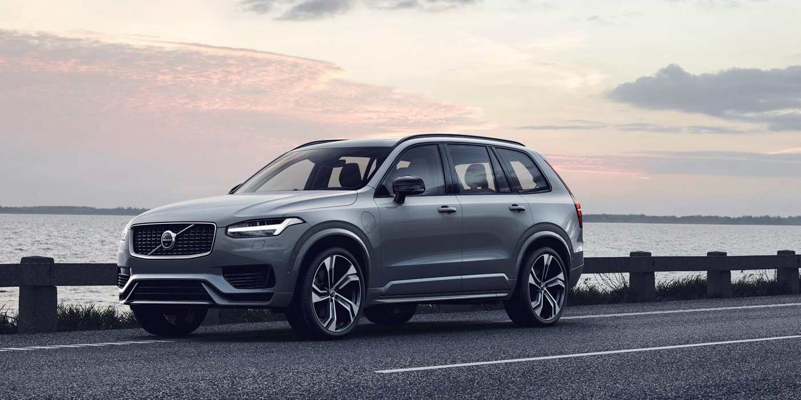
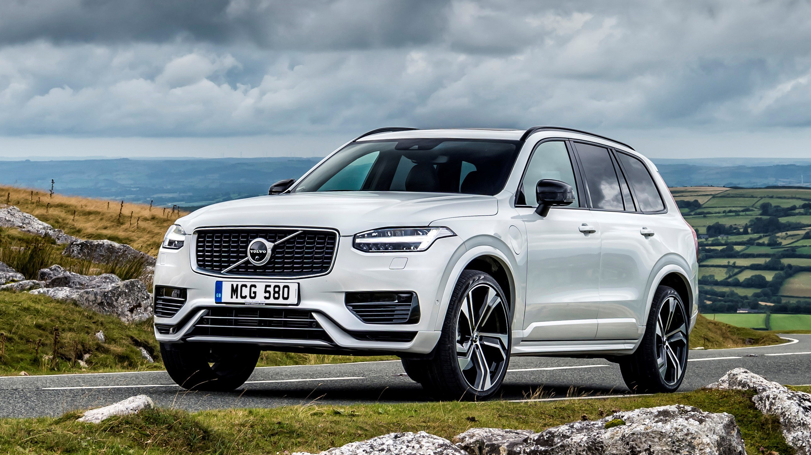

НОВОСТИ 22 февраля 2019
Volvo представила обновленный кроссовер XC90
Шведская компания представила флагманский кроссовер 2020 модельного года, который получил систему
рекуперации кинетической
энергии при торможении и мультимедиа с Android Auto
Вольво Икс-Си 90- это большой кроссовер премиального сегмента с возможностью установки третьего ряда
сидений. Он насчитывает 4950 мм в длину, 1776 мм в высоту, 1923 мм в ширину и 2984 мм между колесными
парами.

Компания Volvo представила обновленный
флагманский кроссовер XC90 2020 модельного года. Автомобиль получил новую
экономичную силовую установку, дополнительные системыактивной
безопасности, а
также
мультимедиа
Отличие от предыдущей версии Автомобиля

От предшественника Volvo XC90 можно отличить благодаря измененной радиаторной решетке
и колесным дискам другого дизайна. Что касается салона, то для него стали доступны новые
варианты конфигурации — к топовой четырехместной модификации и семиместной версии добавили
конфигурацию с шестью посадочными местами.
Моторную гамму кроссовера пополнила усовершенствованная гибридная установка с системой
рекуперации кинетической энергии при торможении, которая на 15% улучшает топливную экономию и снижает
уровень вредных выбросов.